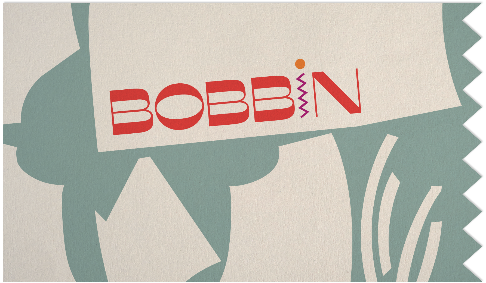
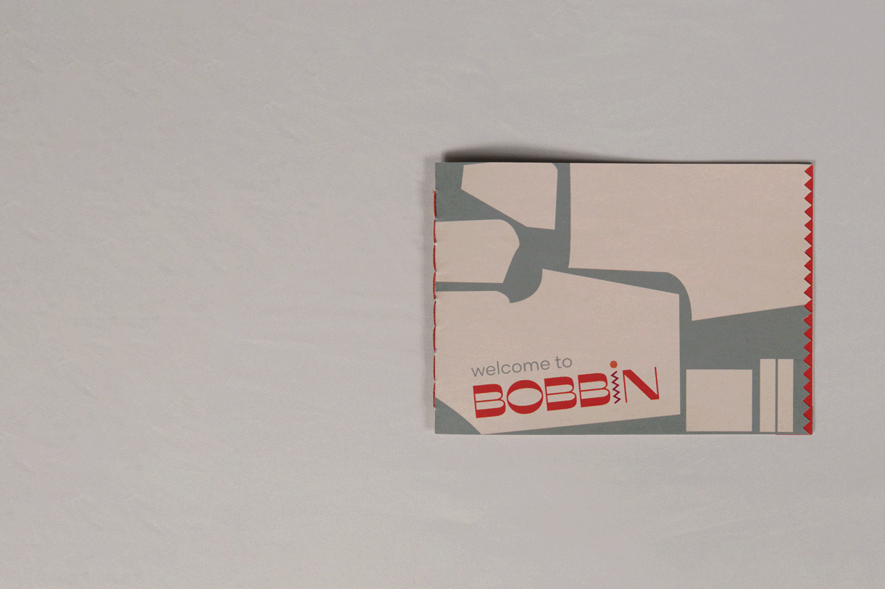
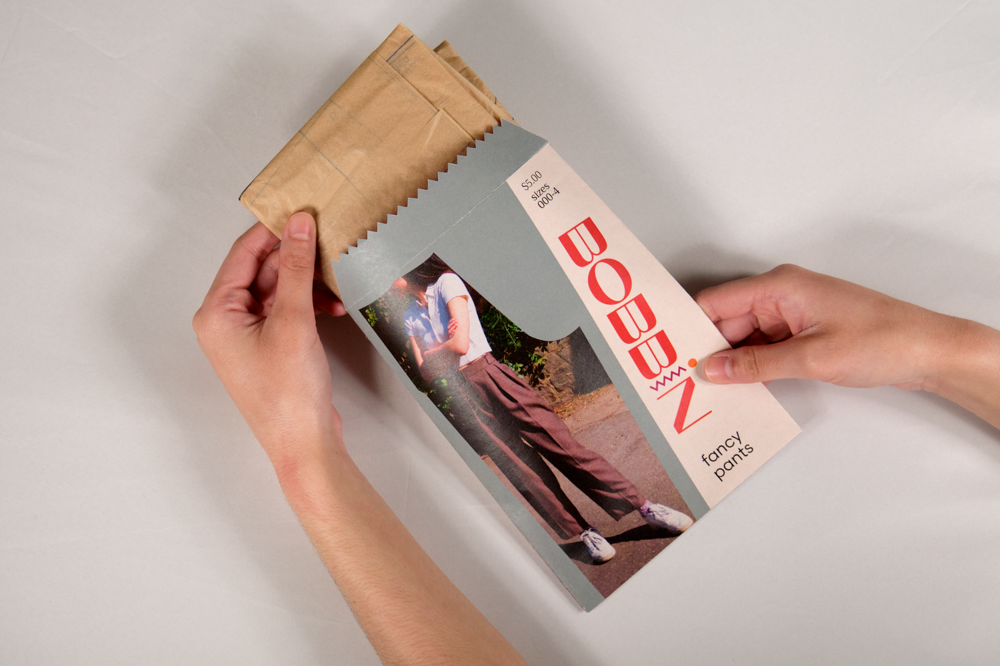
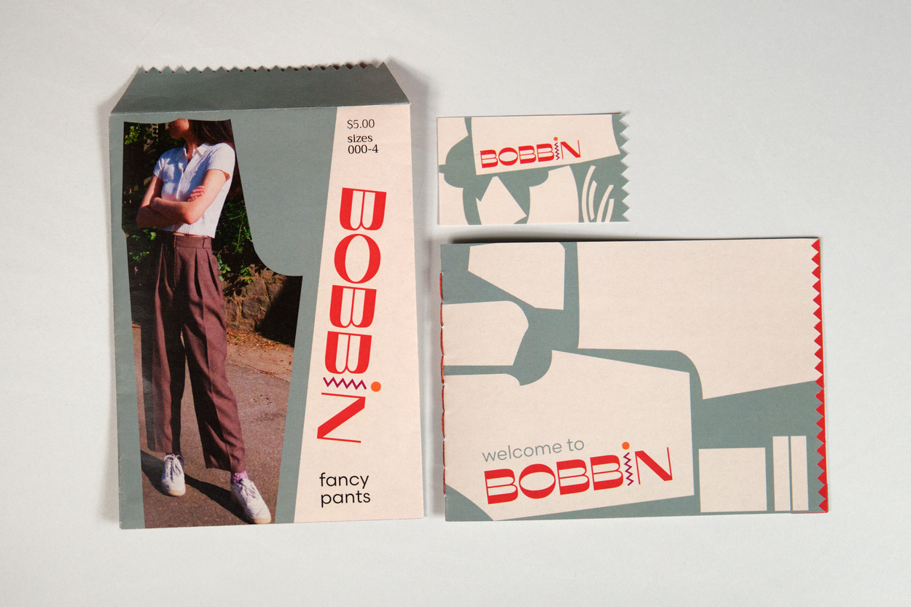
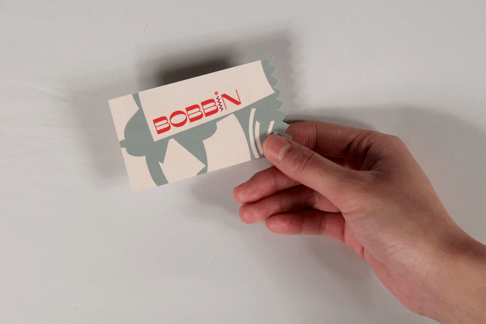
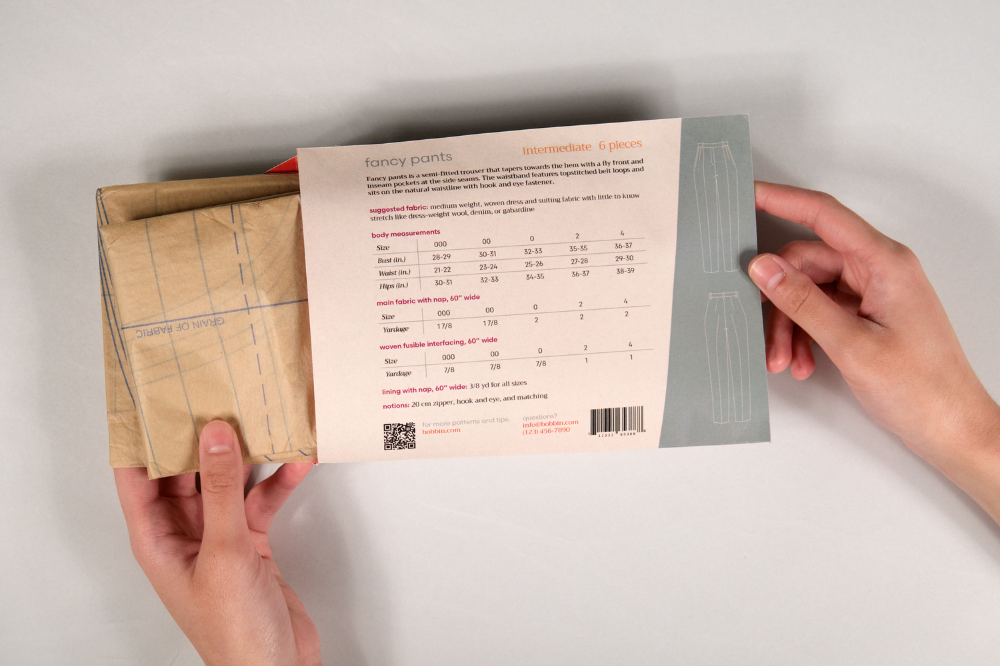
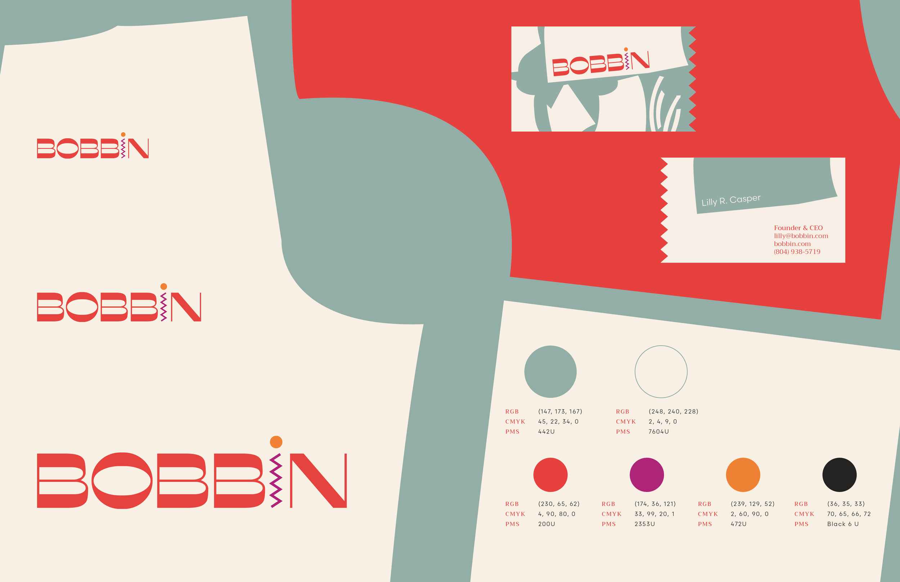

Brand Identity Design
03/23–04/23 (9 weeks)
Becca Leffell Koren
This identity for the fictional sewing-pattern company Bobbin revolves around the materiality of sewing from the pattern pieces to the actual stitches, as well as targeting a younger demographic.
I was tasked with building the entity and identity from scratch, including the research and brand positioning and the identity and system design. I wrote the copy and applied the system to collateral, including a business card, sewing pattern envelope, and pattern guide booklet. You can see the culmination of my positioning research here.

The beginning stages are reflected through the use of shapes that echo actual pattern pieces and their arrangement. Conversely, the act of sewing and the finishing of seams are referenced through the zig zag in the wordmark and cut edges on the collateral, recalling the zig zag stitch. The system’s colors are playful yet matured, just like Bobbin’s intended audience. The lively nature of the colors and pattern arrangements is furthered by the wordmark itself. It features the dynamic sans serif Misto which is placed at an occasional angle, hinting at a youthful and energetic personality.




The sans serif typeface Scandia is used to introduce sections with approachable expertise and bring a rational sentiment to the patterns’ numbers and figures. The body copy, set in the warm and friendly serif typeface Trirong, guides the reader through the sewing process with a personal and craft-oriented touch. Together, Bobbin’s design system works to celebrate not only the process of sewing but also the creativity and craftsmanship of the young sewist.

this website was coded by krissy ♥, last updated March 2026